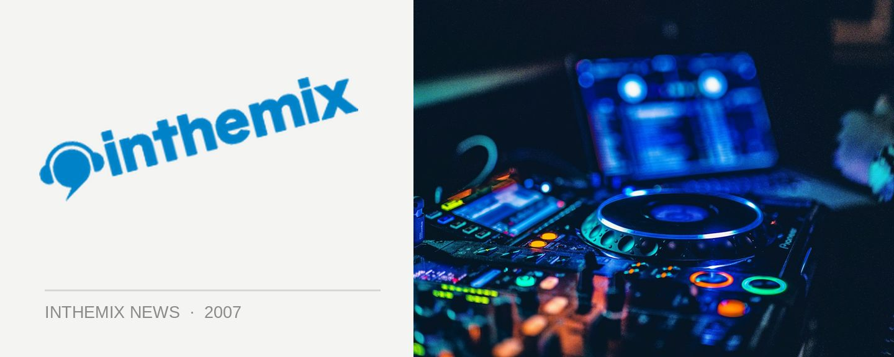

Sandy Rivera returns to Australia in June
Deep house maestro Sandy Rivera will be back in the country for a tour over the June long weekend, with dates so far confirmed for Ambar in Perth, Billboard in Melbourne and Sounds on Sunday at the Greenwood Hotel in Sydney.
Rivera is best known as one of the names behind the Kings of Tomorrow production team, and was last here in Australia as part of last year’s We Love Sounds lineup. Looks like this time he’ll be touring on his own with a number of solo dates.
Check below for the lineup details, and stay tuned for further tour details…
June 8th: Ambar, Perth
Jun 9th: Billboard, Melbourne,
Jun 10th: Sounds on Sunday, Sydney